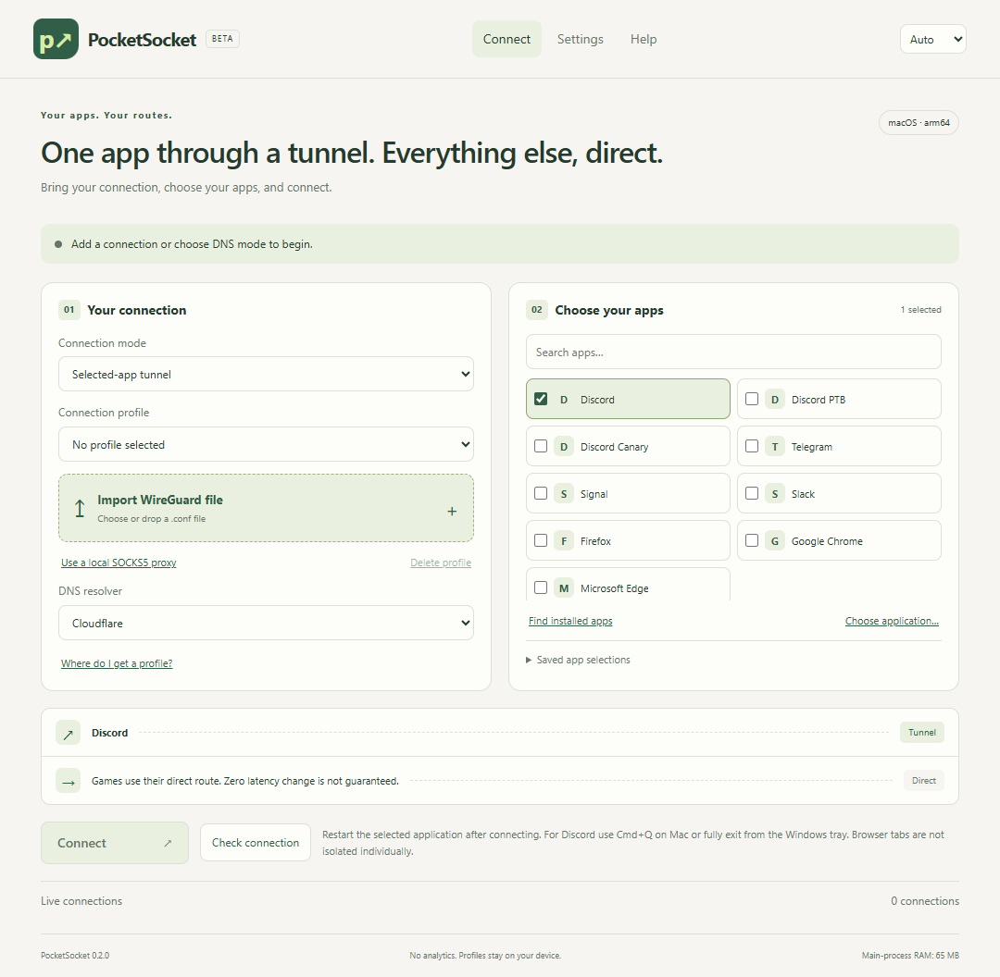

Add your connection
Import your provider’s WireGuard .conf file, add a compatible local SOCKS5 proxy, or choose DNS mode.
Give Discord its own tunnel. Keep your games and other apps on their direct connection.
Get PocketSocket ↓Bring your own WireGuard profile or compatible local proxy. No VPN servers or accounts are included.Games avoid the VPN server. Zero latency change is not guaranteed.
Checking the latest public beta…
M series + MacBook Neo (A18 Pro)
.dmg · arm64 ↓◧macOS 13+
.dmg · x64 ↓⊞Windows 11 · x64
.exe ↓⌘Desktop Linux · x64 · PolicyKit
.AppImage ↓Free unsigned distribution: operating-system trust warnings may appear. Read the installation notes below. This is a beta, not a privacy kill switch.
Import your provider’s WireGuard .conf file, add a compatible local SOCKS5 proxy, or choose DNS mode.
Pick Discord or discover your installed apps. Choosing a browser affects the whole browser.
Approve the system permission, restart the selected app and test access and voice.

Move PocketSocket to Applications. Try opening it, then check System Settings → Privacy & Security → Open Anyway. The app uses a free ad-hoc signature, not paid Developer ID or Apple notarization.
For a trusted copy downloaded from this project, this removes only PocketSocket’s download quarantine. It does not repair a broken file or invalid signature.
xattr -rd com.apple.quarantine "/Applications/PocketSocket.app"The installer has no paid publisher certificate. Verify the release and SHA256SUMS. SmartScreen may offer More info → Run anyway. Smart App Control or an administrator policy can still block unsigned software; do not turn off device-wide protection.
Make the AppImage executable. Routing needs PolicyKit and a desktop authentication agent. If AppImage/FUSE is unavailable, use the .tar.gz archive from the release. If the system keyring is unavailable, profiles are kept only for the session.
No PocketSocket analytics or browsing-history collection. Profiles stay on your device. Connection checks reach Discord and Google’s connectivity endpoint; smart detection also uses Cloudflare DNS. DNS mode affects the device’s DNS traffic and cannot bypass every restriction.